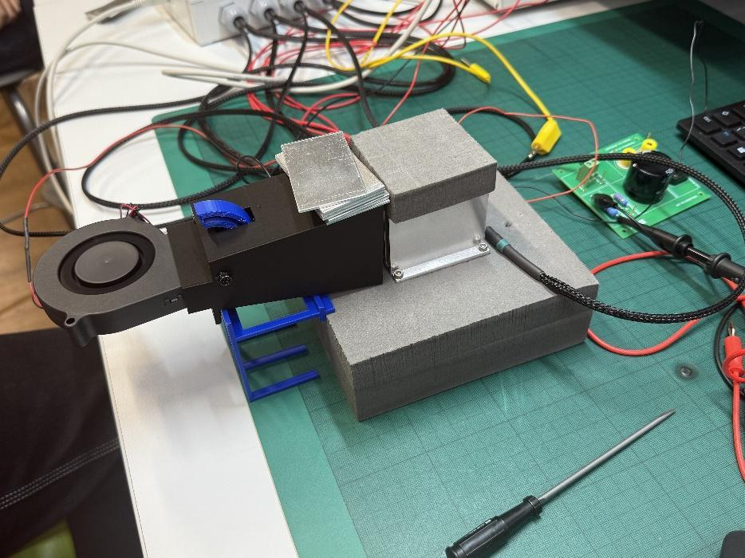
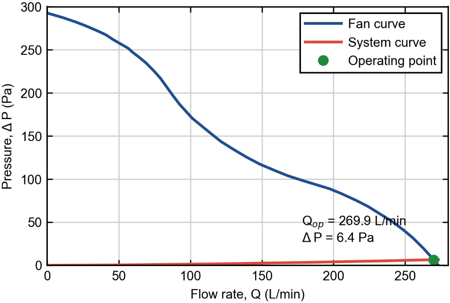
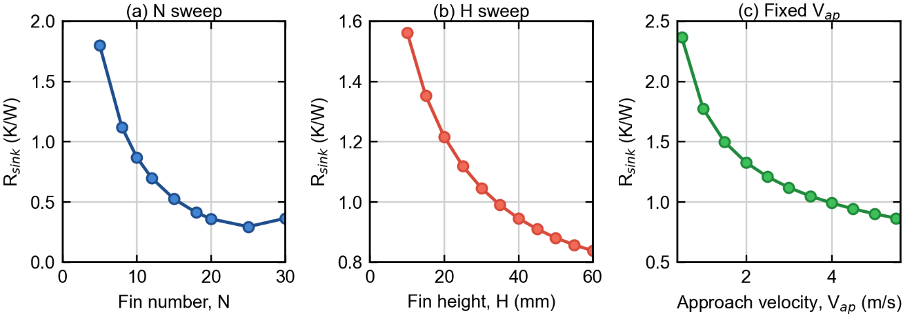
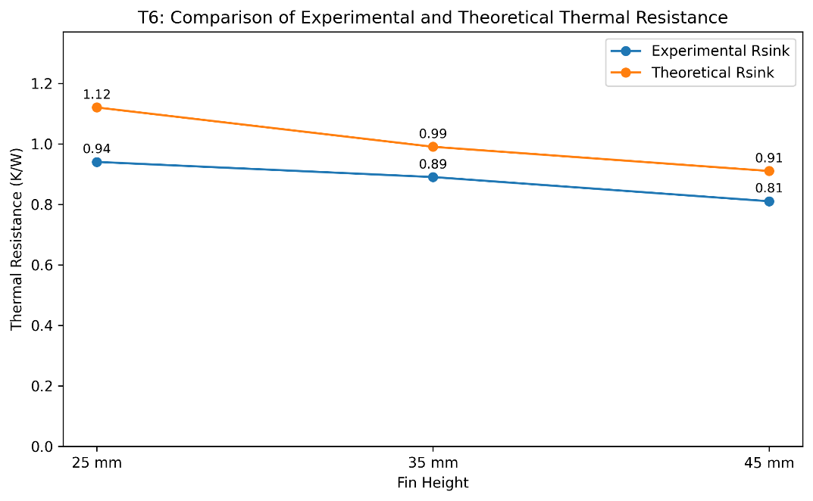
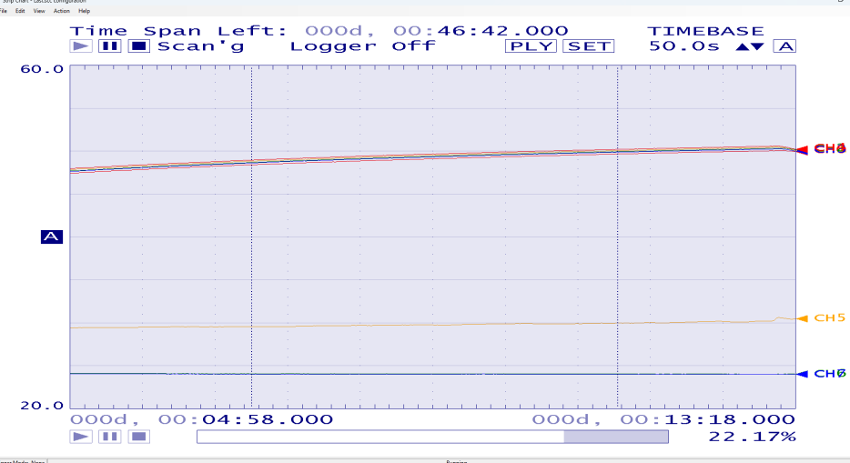
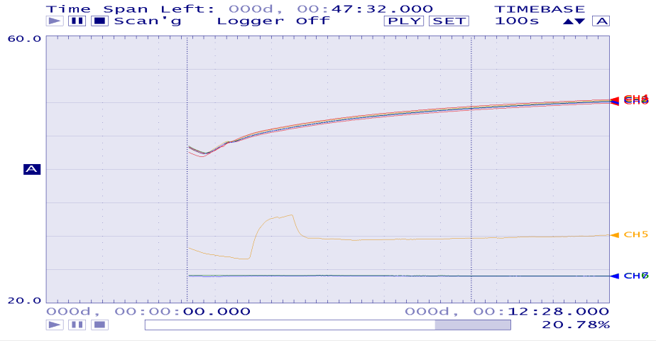
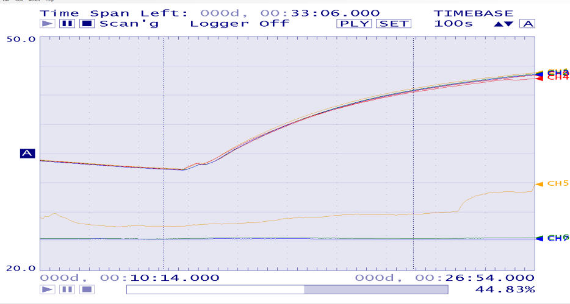
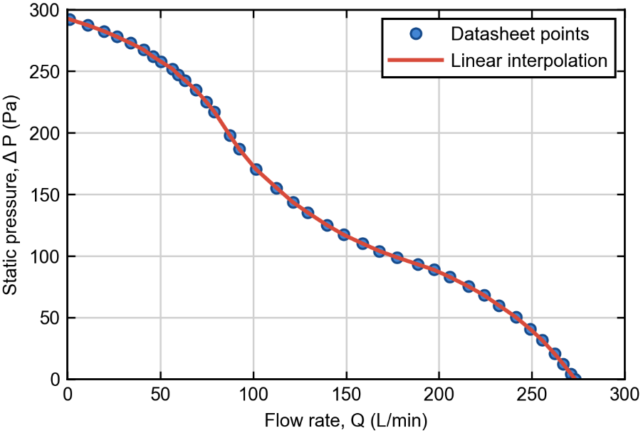

Project 03
LED Cooling,
Modelled & Tested.
A group report project on a high-power LED lighting system. My work connected a MATLAB heat-sink model, fan operating-point calculation, theory/experiment comparison, and LED efficiency analysis.

Report evidence
Model outputs backed by report figures



Analysis workflow
How the model became an engineering comparison
Define heat sink geometry.
The baseline model used a 60 x 60 mm aluminium heat sink with 8 fins, 1.5 mm fin thickness, 5 mm base thickness, and 25 mm fin height.
Solve fan/system intersection.
Fan pressure was linearly interpolated from manufacturer data, then intersected with the heat-sink pressure-drop model inside the measured fan domain.
Compute heat transfer and Rth.
The thermal block used a Teertstra-style heat-transfer coefficient, straight-fin efficiency, base resistance, and parallel convection resistance.
Compare against measured data.
Measured 25, 35, and 45 mm heat sinks confirmed the same trend as the model: taller fins reduced thermal resistance and improved cooling.
Key results
For the baseline 8-fin, 25 mm geometry, the fan-coupled MATLAB solver predicted 4.50 L/s flow, 6.4 Pa pressure drop, 3.00 m/s approach velocity, 34.5 W/m²K convection coefficient, 0.95 fin efficiency, and 1.12 K/W heat-sink resistance.
Q
ΔT
Rsink = ΔT / Q
25 / 35 / 45 mm heat sinks
Rsink
| Fin height | Model | Experiment | Final temp. |
|---|---|---|---|
| 25 mm | 1.12 K/W | 0.94 K/W | 47.06 C |
| 35 mm | 0.99 K/W | 0.89 K/W | 45.84 C |
| 45 mm | 0.91 K/W | 0.81 K/W | 43.80 C |
The experiment used ambient temperature around 24 C and heater input power of 24.54 W.
Measured response
Temperature traces from the lab



My contribution
What I can explain from this project
Built a reusable MATLAB thermal model
I worked from lecture/paper equations into a parametric solver instead of a single manual calculation.
- Fan curve interpolation and in-domain root finding.
- Fin number, fin height, and prescribed velocity sweeps.
- Thermal resistance, convection coefficient, pressure drop, and fin efficiency outputs.
Turned model error into engineering judgement
The model captured the correct trend but slightly overestimated thermal resistance, which became a useful discussion about assumptions.
- Air bypass and sealing around fin channels.
- Radiation and contact resistance omitted from the simple model.
- Measurement uncertainty in temperature, heater power, and airflow.
Linked cooling to LED system efficiency
The report also compared datasheet LED efficiency with an experimental estimate, showing how thermal behaviour affects system-level interpretation.
- Datasheet-based analytical efficiency: 31.2%.
- Experimental estimate: 15.1%, likely affected by real losses and contact resistance.
- Connected electrical input, heat loss, luminous output, and cooling performance.

This page uses the group report and MATLAB script as its content source: Task 2 for the fan-coupled heat sink model, Task 6 for theory/experiment comparison, and Task 7 for LED efficiency context. The figures are taken from the project report and show the actual evidence behind the model.